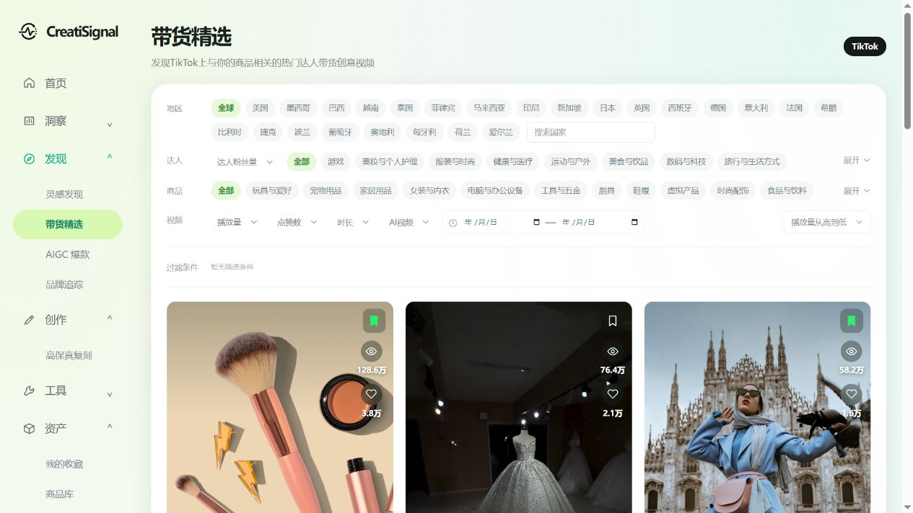
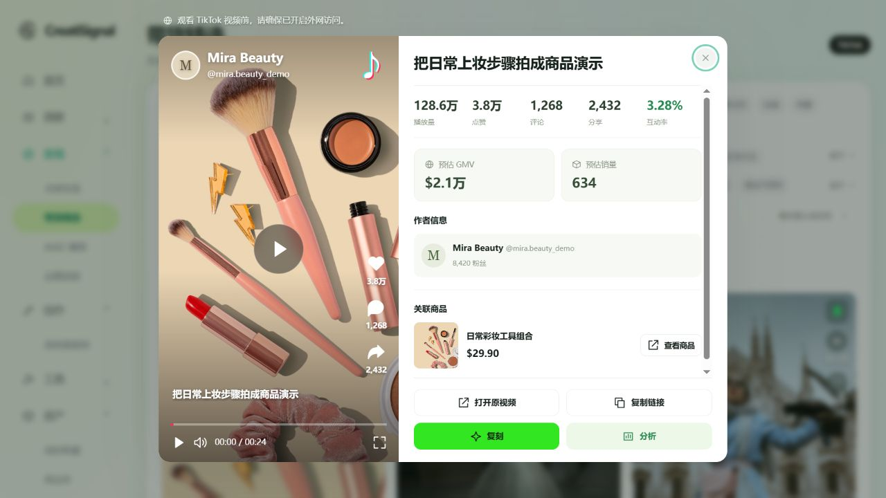
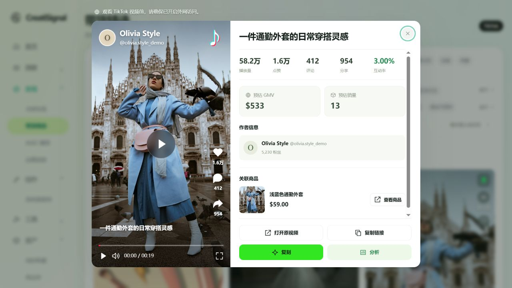
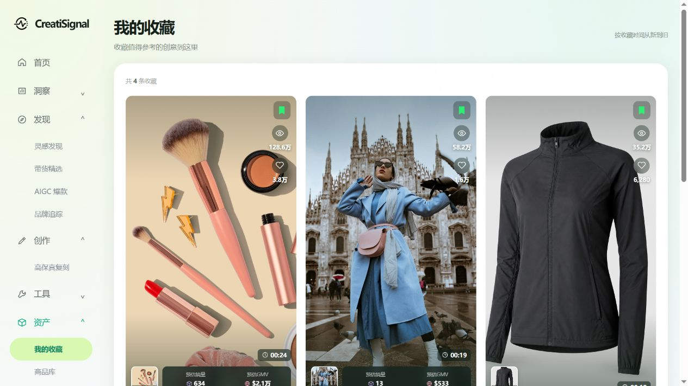
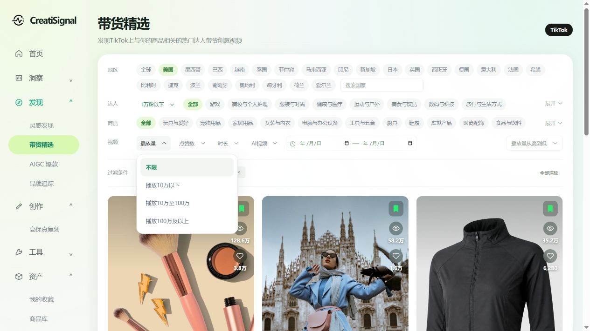
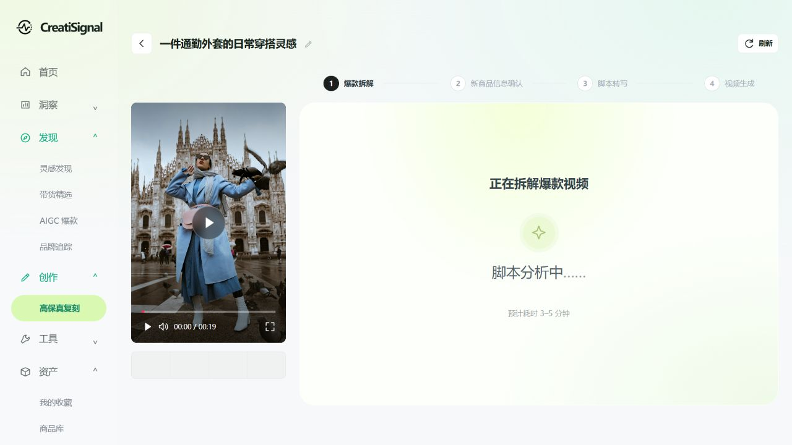
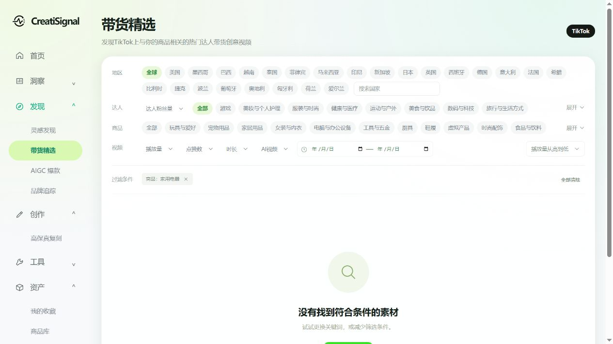
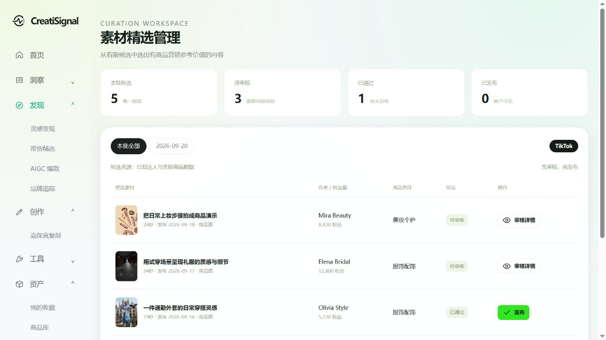
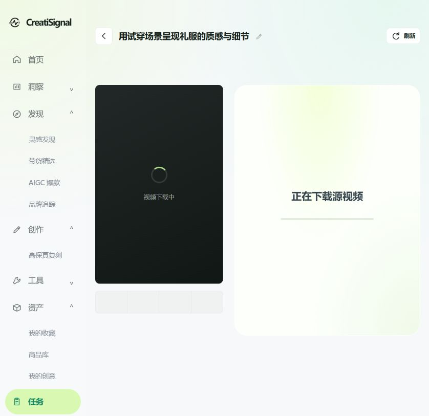
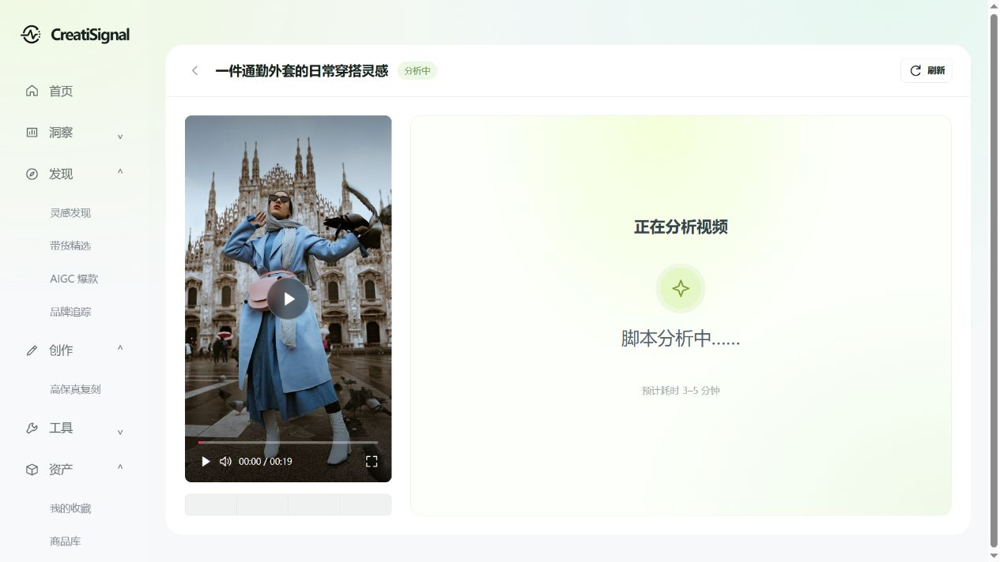

原型示例图
点击图片查看完整大图，点击“进入交互示例”体验对应页面。账号、商品、图片和数值为示意；外链与生成动作不会访问真实账号或创建真实任务。









带货精选 · 2026年9月21日修订说明
本说明记录本次评审确认的最终页面要求；与《功能清单与详细需求 V1.0》不一致处，以本说明和当前交互原型为准。未修改部分沿用原需求。图片、账号、数值以及AI属性均为原型演示数据。
1 入口和页面文案
- 在「发现」下保留「灵感发现」，紧接其后新增「带货精选」。原精选素材列表及筛选、详情迁移到带货精选，灵感发现不重复展示该列表。
- 默认原型入口为带货精选；我的收藏仍在资产下，收藏数据沿用，素材迁移不清空收藏。
- 页面标题：带货精选。副标题：发现TikTok上与你的商品相关的热门达人带货创意视频。
- 删除英文眉题、右上角营销说明、原型场景导航、整行模糊/精准搜索和搜索框，以及列表上方的素材数量说明。页面整体上移，桌面内容顶距32px。
- 收藏页与带货精选均不再提供关键词搜索。收藏页副标题为「收藏值得参考的创意到这里」。
2 筛选区
三行标签依次为「地区」「达人」「商品」，去掉标签中的“分类”二字。地区默认全球，达人和商品默认全部。每一维单选，维度之间取交集。地区选项直接展示；达人和商品默认展示一行，超出一行时提供「展开 / 收起」，一行能容纳时不显示该按钮。展开、收起不清除已选条件。达人使用作者行业类别，商品使用关联商品类别；二者分开筛选。
达人分类按提供截图依次为：游戏、美妆与个人护理、服装与时尚、健康与医疗、运动与户外、美食与饮品、数码与科技、旅行与生活方式、文化与艺术、Entertainment、宠物、母婴与家庭、汽车与交通、家居与生活、玩具与兴趣、应用分类、财经、图书、学习与教育、职业发展、建筑、科学、文化与习俗、宗教与信仰、社会公益、环保、农业与乡村、安全与应急、政治、法律。当前使用这些一级分类，不增加截图未提供的子分类。
商品品类按提供截图依次为：玩具与爱好、宠物用品、家居用品、女装与内衣、电脑与办公设备、工具与五金、厨具、鞋履、虚拟产品、时尚配饰、食品与饮料、二手商品、美妆与个人护理、PPE 自动测试类目、家居装修、图书、杂志与音频、珠宝配饰及衍生品、汽车与摩托车、运动与户外、手机与电子产品、PPE 手动测试类目、行李箱与箱包、家具、纺织品与软装、健康、收藏品、童装、家用电器、穆斯林时尚、母婴用品、男装与内衣。其中「图书、杂志与音频」为一个品类。
达人粉丝量、视频条件、排序和分页条数均使用白色圆角下拉浮层，带细边框、轻阴影、悬停背景和绿色选中态；不再使用系统原生菜单。支持点击选择、点击外部或 Esc 关闭，以及方向键选择。下拉浮层不被分类行折叠区域裁切。
热门地区后增加「搜索国家」输入框，删除搜索图标及「（A–Z）」文案，覆盖249个ISO国家/地区条目。可按中文名、英文名或两位地区代码搜索；结果按英文名称A–Z排序，仅展示中文名称。选中一个结果即应用地区条件，与热门地区按钮互斥，并与其他条件取交集。无匹配国家时显示搜索空态；国家存在但无匹配素材时显示列表空态，不自动换成热门地区。当前原型地区沿用作者地区口径。
| 位置 | 筛选项 | 规则 |
|---|---|---|
| 达人行「全部」之前 | 达人粉丝量下拉 | 不限、1万以下、1万至10万、10万及以上；区间为小于10000、[10000,100000)、大于等于100000，未知值不进入限定区间 |
| 视频行 | 播放量 | 不限、10万以下、10万至100万、100万及以上 |
| 视频行 | 点赞数 | 不限、1千以下、1千至1万、1万及以上 |
| 视频行 | 时长 | 不限、15秒以内（含15秒）、大于15至30秒、超过30秒 |
| 视频行 | AI视频 | 默认不限，仅提供「AI生成」筛选；删除非AI、混合内容、未确认选项。来源核验后启用真实筛选，不能依据粉丝量或封面风格推定；删除选项不代表把这些样本改标为AI生成 |
| 视频行 | 起止日期 | 按原发布日期，两端均包含；允许单边日期；开始晚于结束时阻止应用并提示 |
原「筛选」行改名为「视频」。删除「是否带货」「是否投流」「新视频」「评论数」「转发数」「内容类型」筛选项。删除「更多筛选」入口及弹窗，保留行内视频条件和手动起止日期。原型日期参考日为2026-09-21，正式环境按当前用户时区计算。
已应用条件显示为可移除标签；全部清除恢复不限，保留排序。无结果保留筛选并提供清空入口，不自动放宽条件。排序下拉移至「视频」筛选行最右侧，取消原独立排序行。删除「精选顺序」，排序支持播放量从高到低、GMV从高到低、销量从高到低、互动率从高到低、最新发布，默认播放量从高到低。GMV和销量使用当前视频对应的预估值，缺失值置后、真实0先于缺失值、相同值保持原相对顺序。GMV排序需统一统计周期与计价币种，原型样本为USD。
3 素材卡片
- 竖版封面为主体，封面下方一行视频标题，长标题省略，悬停显示完整标题。点击封面、标题或商品缩略图打开详情。
- 收藏保持第一版右上角书签样式。播放量和点赞在其下方沿右侧排列，只读展示；不将点赞图标作为本站点赞动作。
- 商品封面在左下角；关联商品缺失时不展示商品封面及带货预估条。不显示“示意封面”文案，样本性质在交付说明中注明。
- 底部商品封面右侧展示预估销量、预估GMV。二者分别判断：缺失的项不展示，不使用“—”或0代替未知；两项均缺失时不展示统计条。真实0仍展示。
- 预估值必须来自当前视频关联商品的带货归因数据，保留预估标识、币种、统计周期和来源；不能用作者近30天GMV替代，不能按播放量或商品价格猜测销量。当前数值仅为演示。
- 有商品和预估销量时，时长放在右下方、统计条上方；没有商品或预估销量时，时长沉到底部右下角。仅有GMV时，为时长留出右侧空间，避免重叠。
- 卡片不再堆叠作者、粉丝量、互动率、地区、发布日期和独立详情/源视频按钮。
- 我的收藏同步使用上述列表、竖版封面、时长、播放量、点赞、商品缩略图、可选预估数据及标题，打开同一详情弹窗；删除英文眉题与搜索行，将「按收藏时间从新到旧」移至页头右侧，删除该位置的「收藏数量 · 当前工作空间」文案。收藏顺序继续按收藏时间降序，收藏状态刷新后保留。失效素材仍保留，只读提示源视频暂不可用，可通过书签取消收藏；依赖视频的操作禁用。
- 带货精选补齐10条可浏览的示例素材，包括新增的通勤妆、早餐果昔和周末穿搭内容；新增样本沿用现有示例图片，收藏列表不自动增加这些素材。
4 素材详情
继续采用左侧视频、右侧信息的弹窗：桌面基准960×720，整体4:3，左侧405×720（9:16），右侧占57.8125%；空间不足时等比例缩放。弹窗外侧顶部独立显示“观看 TikTok 视频前，请确保已开启外网访问。”，不占用视频播放区域。
右侧按顺序展示视频标题、播放量/点赞/评论/分享/互动率、带货预估、作者信息、关联商品。带货预估采用两张并排的浅色卡片，左侧「预估 GMV」、右侧「预估销量」，使用与素材封面相同的视频级数据；缺失时显示「暂无数据」，真实0正常展示。带货精选和我的收藏共用此弹窗。删除「值得参考的表达」及其标签，该区域改为作者信息，原下方作者区不重复。作者摘要保留头像、名称、账号、粉丝量，仅只读展示，不显示箭头，不支持点击或打开作者二级信息。商品价格后不显示「USD · 来源价格」，保留价格本身。
移除顶部平台/类目眉题、素材编号/编辑标题/状态行、互动率说明段、“人工精选”“原视频商品参考”小字，以及底部发布时间、时长、来源和更新时间信息组。互动率口径可在指标悬停说明中查看。左侧改为TikTok内嵌播放器样式：作者栏、TikTok标识、中心播放按钮、点赞/评论/分享、视频标题、进度条、时间、音量和全屏控件，删除播放设置按钮。删除原商品封面提示、类型标签、重复观看文案、重复按钮和「播放器原型」可见文案。样本未提供真实视频URL，点击播放或控件时提示需接入真实视频；不假装已经播放。
底部按钮为两行两列，保持当前浅色视觉：
| 第一列 | 第二列 |
|---|---|
| 打开原视频 | 复制链接 |
| 复刻（绿色主按钮） | 分析 |
打开原视频使用有效来源链接；复制链接复制真实源视频URL，缺失或失败时给出明确提示，不复制伪造链接。复刻带入当前素材并进入源视频下载中间页，不能固定带入第一条素材。分析连接对应素材的分析入口。源视频失效时禁用依赖源视频的操作。
原型中打开原视频为明确演示提示；复制链接因样本无真实源URL而提示暂不可复制；复刻和分析分别进入对应的下载中间页，模拟下载3秒后展示拆解中或分析中状态，不发起真实下载、不生成真实视频。正式环境需分别核验来源链接、媒体下载、分析和复刻能力；此处按钮布局不代表已经接通生产能力。
5 本次验收重点
- 菜单顺序为灵感发现、带货精选、AIGC爆款、品牌追踪；带货精选有正确选中态。
- 地区、达人、商品、粉丝量和视频条件组合生效，清空和逐项移除可恢复结果。
- 不再出现搜索行、英文眉题、原型导航、素材数量说明及已删除的三个筛选项。
- 卡片商品和预估值缺失时按规则隐藏，0值不被误隐藏；两种时长位置均无重叠。
- 收藏在带货精选与我的收藏之间同步，刷新后保留；取消收藏不删除素材。
- 详情只保留一个原视频入口，外网提示位于弹窗外顶部；播放器完整展示，作者摘要只读，圈选的冗余信息已移除。
- 四个操作按钮的顺序、两行布局和复刻素材传递正确；演示动作不报真实任务成功。
6 原型入口
打开同目录 prototype.html 进入带货精选；通过侧栏访问灵感发现、带货精选和我的收藏。其余评审场景从 index.html 的原型图库进入。静态示例图随本次页面调整同步更新。
7 列表分页
带货精选和我的收藏均在列表底部展示分页：总条数、每页条数、上一页、数字页码、下一页、当前页/总页数。默认及最小每页10条，可选10、20、50条；两个页面各自维护每页条数。先对全部结果筛选、排序，再按页展示；切换筛选、排序、每页条数或页面入口时返回第1页。页码多时显示首尾页与当前页相邻页，中间使用省略号。
第一页禁用上一页，末页禁用下一页；无结果时显示空态，不展示分页。取消收藏使末页变空时自动回到最近有效页；加入收藏按收藏时间排在最前，跨页收藏状态同步，刷新后收藏保留。
8 复刻下载中间页
在「创作 → 高保真复刻」二级菜单提供常驻入口，也可从素材详情的「复刻」进入。沿用提供的复刻工作台布局：顶部展示当前参考素材标题、返回和刷新；左侧视频区域替换为深色加载占位，居中显示加载动画和「视频下载中」。右侧上方步骤为「爆款拆解 → 新商品信息确认 → 脚本转写 → 视频生成」，当前高亮第一步；下方大面板居中展示「正在下载源视频」和其下方的进度动画，删除原圆形下载图标。不显示虚构的下载百分比或完成倒计时。返回按钮回到进入前的带货精选或我的收藏。
进入后模拟下载3秒，自动切换为拆解状态：左侧展示当前参考素材的播放器样式，右侧展示「正在拆解爆款视频」、动态星光图标、「脚本分析中……」和「预计耗时 3–5 分钟」。保持第一步高亮，不模拟拆解完成。刷新重新开始3秒下载流程；离开页面清理计时器，不发生延迟跳回。此交互只演示状态衔接。
9 素材分析下载中间页
带货精选和我的收藏的素材详情点击「分析」，携带当前素材进入分析下载中间页。沿用提供的分析结果页面框架：居中的白色卡片、顶部当前素材标题和状态、左侧竖版视频、右侧分析内容区，导航高亮「任务」，不展示高保真复刻的四步流程。
下载阶段：标题旁显示「下载中」，左侧为深色加载占位与「视频下载中」，右侧居中显示「正在下载源视频」和进度动画，不增加圆形下载按钮。模拟3秒后，状态变为「分析中」；左侧展示当前素材的播放器样式，右侧显示「正在分析视频」、星光动画、「脚本分析中……」和「预计耗时 3–5 分钟」。不伪造已完成结果。
顶部刷新重新开始模拟下载。返回回到进入前的带货精选或我的收藏；离开页面清理计时器，不延迟跳回。失效素材的分析按钮保持禁用。此阶段仅补充交互原型与独立示例图，不合并到正式项目。
初版需求存档（与当前修订不一致处，以修订说明为准）
CreatiSignal 带货创意精选功能需求
版本 V1.0 · 2026年9月20日 · 产品与研发评审
本功能面向 TikTok 电商商家和创意团队，利用现有达人、视频和商品数据，提供经过筛选的商品营销参考素材，并连接收藏、素材分析和视频创作。主要交付页面为「发现 → 灵感发现」「素材详情」「作者信息」「资产 → 我的收藏」；另提供素材精选管理及创作衔接的示例。
视觉采用浅色渐变背景、左侧导航、白色内容容器、绿色选中态和大封面卡片。页面字段按本需求的数据口径展示。所有原型图片、账号、商品和数值均为演示数据；封面使用本地示意资产，不代表真实 TikTok 作品或销售效果。
1 定位与交付范围
1.1 用户目标
用户能够找到与自己的商品品类相关的营销素材，查看视频互动、关联商品和作者背景，保留值得参考的内容；素材具备相应媒体能力时，继续下载或进入现有分析与复刻流程。
1.2 首期与条件开放能力
| 范围 | 首期要求 | 条件具备后开放 |
|---|---|---|
| 素材发现 | 精选列表、搜索、组合筛选、排序、详情、查看源视频 | 更丰富的经核验内容标签 |
| 作者信息 | 已提供字段、已精选作品、来源主页 | 完整达人合作流程另行规划 |
| 我的收藏 | 收藏、搜索、详情、取消收藏、失效状态 | 对具备能力的素材开放下载和复刻 |
| 媒体 | 默认使用有效源视频链接；封面不等于可播放媒体 | 站内播放、下载、一键复刻分别验证、分别开放 |
| 内容供给 | 有限候选、人工审核、发布、下线 | 有证据的辅助识别，仍保留审核环节 |
一期只呈现 TikTok 数据。截图中的 Facebook 切换、CTR、广告消耗、投流标签、预估单视频销量和 GMV，不在当前字段范围内。示例里的「立即复刻」「下载」按能力条件展示，不因页面参考图中有按钮就默认可用。
2 功能清单
| 编号 | 功能 | 详细说明 | 阶段 | 对应原型 |
|---|---|---|---|---|
| F01 | 精选素材浏览 | 只展示已发布、可供当前工作空间浏览的营销素材；以商品封面或真实视频封面呈现 | 首期 | 01 |
| F02 | 搜索与筛选 | 商品名、素材标题、作者名称/账号搜索；商品类目、作者地区、语言、粉丝量及视频指标筛选 | 首期 | 01、05 |
| F03 | 排序与加载 | 精选顺序、播放量、互动率排序；在有效字段齐备后支持发布时间排序 | 首期 | 01 |
| F04 | 素材详情 | 视频级五项指标、源视频、关联商品、作者摘要、数据更新时间 | 首期 | 02 |
| F05 | 作者信息 | 地区、语言、性别、粉丝量、行业、商品类目、近30天GMV及客单价、作者互动数据、AI受众画像 | 首期 | 03 |
| F06 | 收藏及取消 | 卡片与详情收藏状态同步；收藏归属当前工作空间内的当前用户 | 首期 | 01、02、04 |
| F07 | 我的收藏 | 独立入口、搜索、按收藏时间排序、查看、取消收藏、失效处理 | 首期 | 04 |
| F08 | 查看源视频与商品 | 有效链接在新标签打开；无链接不展示可点击入口 | 首期 | 02、03、04 |
| F09 | 播放与下载 | 可播放媒体存在时显示真实播放器；可下载文件存在时才显示下载入口 | 条件开放 | 见9.1能力规则 |
| F10 | 进入复刻 | 带入可用参考视频及其来源信息，选择自己的商品后继续现有创作流程 | 条件开放 | 06 |
| F11 | 精选管理 | 候选预选、详情审核、参考点与标签填写、通过、发布、下线 | 供给配套 | 08 |
| F12 | 异常与数据说明 | 无结果、加载失败、缺失指标、源视频失效、数据过期及无权限状态 | 首期 | 04、07及文中规则 |
3 字段清单与展示口径
3.1 用户已提供的业务字段
| 数据对象 | 字段 | 页面位置与用途 | 展示及边界 |
|---|---|---|---|
| 作者 | 地区 | 作者摘要、作者详情、筛选 | 明确标为「作者地区」，不代表广告投放国家、受众地区或商品销售市场 |
| 作者 | 语言 | 作者详情、更多筛选 | 明确为作者资料语言，不直接推定每条视频的口播语言 |
| 作者 | 性别 | 作者详情 | 使用来源提供值；缺失显示「未提供」，不根据头像判断 |
| 作者 | 粉丝量 | 卡片、详情摘要、作者详情、筛选 | 卡片缩写，悬停显示完整数；筛选使用原始数值 |
| 作者 | 达人行业 | 作者详情 | 与商品类目分开展示；不直接作为当前视频类目 |
| 作者 | 商品类目 | 作者详情、候选预选 | 表示作者相关类目。列表的商品类目优先取关联商品，缺失时使用人工确认类目 |
| 作者 | 近30天GMV | 作者商业表现区 | 标明币种、统计起止日期；来源为估算时标「预估」。不显示在视频表现区 |
| 作者 | 近30天客单价 | 作者商业表现区 | 标明币种和同一统计周期；不等于当前关联商品价格 |
| 作者 | 互动数据及互动率 | 作者详情的更多资料 | 标明统计周期、包含哪些作品及指标口径；缺少口径时显示「暂未提供有效统计」 |
| 作者 | 受众画像 AI诊断 | 作者详情独立区域 | 标注「AI推断，仅供参考」；保留已有文字或维度，不编造年龄比例、性别比例或购买偏好 |
| 作者 | 最近10条视频URL | 供给审核及作者候选分析 | 表示当前可获得的作品范围，不代表全部历史。客户作者弹窗只推荐其中已精选作品 |
| 视频 | 播放量 | 卡片与详情 | 当前源平台累计值；不表示曝光、独立用户或自然流量 |
| 视频 | 点赞数 | 详情 | 当前视频数据，未知用「—」，真实0显示0 |
| 视频 | 评论数 | 详情 | 同上；不增加评论内容分析能力 |
| 视频 | 分享数 | 详情 | 同上；不与本站收藏数量合并 |
| 视频 | 互动率 | 卡片与详情、筛选及排序 | 优先使用有明确口径的来源字段。当前示例按（点赞+评论+分享）÷播放量演示；正式数据公式不同则改为真实口径，不混用 |
| 商品 | 封面 | 关联商品；可作卡片图像兜底 | 用作卡片时标「商品图」。不能把商品图伪装成视频截帧或播放器 |
| 商品 | 价格 | 关联商品 | 币种随来源展示；不自动换汇；不与作者客单价混淆 |
| 商品 | 商品名 | 关联商品、搜索、无素材标题时的卡片标题 | 长名称截断，详情显示完整值 |
| 商品 | 源链接 | 商品区域的「查看商品」 | 仅有有效链接时开放；链接暂不可用时仍可保留已知商品信息 |
3.2 为页面体验需要补充或核验的信息
以下信息不能仅由已有五项视频指标和源URL推导。它们是明确的接入/审核需求，不视为当前上游已经具备。
| 信息 | 处理方式 | 缺失时表现 |
|---|---|---|
| 作者名称、账号、头像、主页链接 | 接入时核对可用性；需有稳定作者标识关联作品 | 名称缺失以账号代替；头像用默认图；主页链接缺失不显示跳转 |
| 视频稳定标识及源链接 | 从有效来源记录核验，作为去重及详情定位依据 | 身份或链接不完整的候选不发布 |
| 视频封面 | 如能取得真实封面则优先使用 | 使用关联商品封面并标「商品图」；均缺失则使用统一占位图 |
| 素材标题、原文案 | 有原始字段使用原始值；运营可填写参考标题，明确为编辑标题 | 无标题使用商品名，再缺失显示「营销素材 + 短编号」；不生成虚构原文案 |
| 视频时长、原发布日期 | 接入时或审核时补充核验 | 卡片不显示空徽标；不参与相应筛选；不把入库日期当作发布日期 |
| 单条视频营销类型、参考点 | 运营审核补充，如产品演示、场景体验、测评对比、口播推荐 | 无法说明商品营销参考点的内容不发布 |
| AI属性 | 人工核验或可追溯标识，取AI生成、真人实拍、混合内容、未确认 | 默认未确认；不得通过低粉丝数、卡通风格或短时长直接判断 |
| 数据更新时间 | 随对象记录最近成功更新日期时间 | 明确「更新时间未知」；不统一伪装为今日实时数据 |
| 统计口径及币种 | 作者与视频独立记录来源、周期和计算方式 | 无法解释的统计不作为排序依据，不显示误导性数值 |
| 播放、下载和复刻能力 | 分别确认媒体可用性和当前用户操作权限 | 默认只有源链接；相应高级按钮隐藏 |
原型中「发布时间」「时长」「营销类型」「参考点」属于上述补充字段的示例。原型中真实照片仅用于模拟商品封面，不用于证明素材真人/AI属性。
3.3 全局数字与时间规则
- 列表可使用万、亿缩写，详情保留可读精度；悬停可查看原始完整数。1万粉以下严格表示原始粉丝数小于10000，不包含10000；模糊10K或未知值不入此筛选结果。
- 0与未知严格区分。播放量为0、缺失或与其他指标的时间口径不一致时，不自行计算互动率。
- 互动率使用百分比，小数两位。当前演示样本统一使用同一公式；不同来源公式不能混在同一排序中，未取得可比口径时取消互动率排序。
- 作者统计周期按来源实际起止日期显示。视频累计指标标明其更新时间；来源按天/周更新时如实显示，不承诺实时。
- 发布时间保留来源时区并转换至当前用户时区；“近7天”按用户时区的今天及前6个自然日计算。商品价格保留来源币种。
4 页面结构与视觉规则
左侧导航沿用首页、洞察、发现、创作、工具、资产、任务、设置。发现展开后选中「灵感发现」，资产展开后选中「我的收藏」。本功能不增加一级导航。
列表页顶部为标题和说明；主体为白色圆角容器，先展示商品类目标签，再展示搜索和筛选。下方为素材卡片网格。1600px桌面原型使用4列，宽屏可增加列数；窄屏减少列数，不横向压缩卡片文字。详情使用居中遮罩弹窗，左侧大图/真实播放器、右侧信息及底部操作；作者资料在同一遮罩内打开，返回后保留素材详情。
绿色用于当前导航、收藏选中态、重点操作和少量标签；正文使用深色文字，数据说明使用灰色文字。不同对象的指标分组展示，不在一个统计条内混排视频播放量和作者GMV。
5 灵感发现详细需求
5.1 入口与默认状态
- 入口：发现 → 灵感发现。标题「灵感发现」，副标题「发现与你的商品相关的营销创意」。
- 仅展示已发布且当前工作空间可见的素材。默认全部类目、无关键词、无筛选，排序为「精选顺序」。精选顺序由运营维护，不能描述为算法预测的转化率。
- 显示当前结果数、TikTok来源标识、当前筛选标签。首次加载为卡片骨架，失败显示重试，不把加载失败显示成0条结果。
- 每次请求展示24条，底部“加载更多”；无更多内容显示“已展示全部素材”。修改筛选或排序返回第一批。当前原型仅演示8条样本。
5.2 搜索与筛选
| 项目 | 规则 |
|---|---|
| 关键词 | 搜索素材标题、商品名、作者显示名和账号。去除前后空格，不区分英文大小写；按Enter或搜索按钮提交，清空可恢复 |
| 商品类目 | 全部、美妆个护、服饰配饰、家居生活、食品饮料、运动户外等；实际选项来自可用类目。采用单选，全部代表不限 |
| 作者地区 | 使用作者地区字段，单选不限/具体地区。不能标为“投放国家” |
| 作者语言 | 使用作者资料语言，单选；语言未知仅在不限状态出现 |
| 粉丝量 | 不限、1万以下、1万至10万、10万及以上；区间为小于10000、[10000,100000)、大于等于100000 |
| 视频播放量 | 不限、10万以下、10万至100万、100万及以上；使用原始值，边界同半开区间原则 |
| 视频互动率 | 不限、低于1%、1%至3%、3%及以上；仅对口径可比的有效数据启用 |
| 视频时长 | 补齐后开放：15秒以内（含15秒）、大于15至30秒、超过30秒；筛选内未知值不入结果 |
| 视频发布时间 | 补齐后开放：不限、近7天、近30天；不提供虚构的发布时间 |
基础栏提供关键词、作者地区和排序；“更多筛选”弹窗提供语言、粉丝量、播放量、互动率及具备数据的时长/发布时间。不同筛选维度之间取交集。弹窗内先修改草稿，点击“应用筛选”后生效；关闭或取消不保存本次修改；“重置”只重置草稿，仍需应用。
已应用条件以标签呈现，可单独移除；“清空筛选”同时清空类目、关键词及全部筛选，保留当前排序。无结果显示“没有找到符合条件的素材”，提供清空筛选，不自动放宽条件。
5.3 排序
精选顺序按运营发布顺序/优先级；播放量和互动率按有效数值降序；最新发布在发布日期可用时开放。未知值统一排在有效值之后，不按0参与比较。相同数值保留稳定次序，翻页时不重复或漏项。互动率不是点击率或转化率。
5.4 素材卡片
从上到下显示：图像、营销类型标签、收藏按钮、素材标题、作者与粉丝量、视频播放量和互动率、可用时的时长与发布日期、查看详情/查看源视频。
真实视频封面优先；商品封面兜底时标「商品图」。没有可播放媒体时不出现居中播放键、播放进度条或“点击播放”提示。点击卡片主体、标题或“查看详情”打开详情；点击作者打开作者资料；点击收藏只切换收藏，不同时打开详情。
卡片标题最多两行、作者一行截断。标签最多一个主营销类型，AI属性仅在已核验时作为次级标签。数字字段缺失显示“—”或不显示对应次要项，保持卡片高度一致。卡片不展示作者GMV、商品销量、CTR、广告消耗或未经确认的自然流/广告身份。
6 素材详情详细需求
6.1 弹窗布局
左侧为视频封面、商品示意图或真实播放器；右侧从上到下为素材标题及编号、五项视频指标、创意参考点、关联商品、作者摘要、补充信息和操作栏。右侧内容过长时独立滚动，底部操作保持可见。点击关闭、遮罩或Esc关闭，返回列表时保留筛选、排序与滚动位置。
6.2 视频信息
- 视频表现固定为播放、点赞、评论、分享、互动率；来源值不可得时显示“—”。互动率旁提供口径说明。
- “参考点”采用人工编辑内容，解释开头、场景或卖点呈现的参考价值。不要把它写成已经验证的成交原因。
- 原始文案有数据才展示，可展开完整文本。编辑标题与原文案不得混为一项。
- 补充区域展示原发布日期、时长、视频来源、源视频标识、数据更新时间。没有分辨率、广告消耗等级等字段时不占位假填。
6.3 关联商品
按照当前数据模型，一条素材展示一个已确认关联商品，包含封面、商品名、价格和查看商品。没有有效商品关联时显示“暂未关联商品”，不得根据作者常卖商品自动关联。若后续来源允许多个商品，另行扩展，不能任意取一个并宣称唯一。
关联商品是原视频的商品参考，不自动成为用户创作时的商品。价格缺失显示“价格未提供”；商品链接缺失隐藏查看商品，其他字段仍可展示。
6.4 作者摘要
显示头像或默认头像、名称/账号、粉丝量、作者地区，点击打开完整作者信息。摘要不堆叠性别、受众画像和近30天商业指标。
6.5 主操作
首期主操作为「查看源视频」，次操作为「收藏/已收藏」。具备可下载文件后增加「下载」；具备完整参考媒体和复刻能力后增加「一键复刻」。标题下可说明“前往TikTok观看完整内容”；不能将静态封面做成可播放假视频。
7 作者信息详细需求
顶部显示作者头像、名称、账号、地区、语言和粉丝量。资料分成三个区域：
- 基础资料：性别、达人行业、相关商品类目。字段来源未知不展示推测值。
- 近30天商业表现：GMV、客单价、币种、统计周期、最近更新时间。来源为预估时保留预估标记。作者互动数据以单独行/折叠区显示，说明覆盖作品和统计周期。
- 受众画像：展示已有AI诊断描述，标「AI推断，仅供参考」。没有诊断时展示“暂无受众画像”；不把模型描述画成来源未提供的百分比分布图。
底部展示“该作者的已精选作品”，最多先展示3条，点击作品进入相应素材详情。原始最近10条URL用于供给分析，未审核作品不会自动混入精选推荐。未找到其他已精选作品时显示“暂无其他精选作品”。
有效主页链接可打开源作者主页。首期不增加加入达人候选、联系方式导出或合作跟进，以免将素材发现扩大成完整达人管理。作者弹窗返回原素材后，原收藏状态和滚动位置保留。
8 我的收藏详细需求
入口：资产 → 我的收藏。沿用参考图的标题、副标题、右上搜索与卡片布局，显示收藏数量，默认按收藏时间倒序。只查当前工作空间中当前用户的收藏；搜索字段与素材发现一致。
收藏动作幂等：重复收藏同一素材只有一条记录，不刷新首次收藏时间。取消后重新收藏生成新的收藏时间。收藏状态在列表、详情、作者作品及收藏页同步，并在刷新后保留。失败时恢复原状态并提示重试。
取消收藏为可撤销的轻量操作，不弹确认框；卡片移除并提示“已取消收藏 · 撤销”，撤销恢复该条收藏。取消收藏不删除源视频、共享素材和已有创作项目。
没有收藏时显示“还没有收藏素材”，提供“去发现素材”。有收藏但搜索无匹配时使用“没有找到匹配的收藏”，只清空搜索，不误导用户重新收藏。
8.1 不可用素材
| 状态 | 收藏页表现 | 允许操作 |
|---|---|---|
| 暂时加载失败 | 保留卡片，提示暂时无法读取最新数据 | 重试、取消收藏；有效源链接可继续打开 |
| 已确认源视频失效 | 保留历史卡片并遮罩“源视频暂不可用” | 查看已有信息、取消收藏；关闭依赖该源的播放/下载/复刻 |
| 因内容风险下线 | 隐藏原封面与文案，显示简化不可用占位 | 取消收藏；不提供绕过下线的原链接 |
| 当前工作空间无权限 | 只显示“当前素材不可访问” | 返回列表或取消收藏；不泄露作者/商品详情 |
一次超时、登录验证或网络错误不能自动认定为永久失效。因数据更新慢而过期的卡片保留历史值及更新时间，不清零。
9 媒体能力与创作衔接
9.1 各操作独立判断
| 已确认的能力 | 页面呈现 |
|---|---|
| 只有有效源链接和图像 | 显示图像、查看源视频、收藏；无播放器/下载/一键复刻 |
| 可站内播放，尚不可下载/复刻 | 使用真实播放器；不因能播放自动开放其他动作 |
| 有可下载文件 | 增加下载；点击后获取有效文件，失败允许重试 |
| 有可用完整参考媒体，现有复刻流程支持且用户可操作 | 开放一键复刻；同时再次校验当前素材是否仍可用 |
下载中的按钮显示进度或处理中并防止重复触发。失败提示“下载失败，请重试”，不报成功。复刻素材准备失败停留原页面，显示原因，不创建空白项目或扣减生成额度。
9.2 一键复刻衔接
- 点击一键复刻后带入参考素材，展示素材名称、来源、时长与原关联商品，便于用户确认。
- 用户从自己的商品库选择目标商品。原视频关联商品仅作参考，不默认替用户选择。
- 用户可填写希望保留的表达方式或改写方向。未选择目标商品时“进入创作流程”不可用。
- 点击继续后进入现有素材分析/脚本改写流程，带入参考媒体、来源和用户选择的目标商品；不是立即开始视频生成。
- 已有项目需要明确选择新建或进入已有项目，不覆盖已有稿件。退出准备页不删除收藏。
原型06为此条件能力的独立演示，页面入口标注在原型场景导航中；不代表当前仅链接数据已经支持复刻、下载或真实播放。
10 素材供给与精选管理
10.1 候选来源和预选
利用已提供的作者地区、语言、商品类目、粉丝量、带货表现和最近10条视频URL预选有限候选。优先处理有明确商品关联及商品演示线索的内容，再进行单条核验。不要求扫描、下载或识别全部存量视频。
粉丝量不设置全池一万粉上限。AI生成、真人实拍和混合营销素材都可以入池；低粉和AI属性只用于经核验的专项筛选。作者GMV用于辅助发现带货来源，不能直接当作视频入选的效果证明。
10.2 审核与状态
后台工作页提供待审核、已通过、已发布、已下线四个主要视图。候选点击打开审核详情；审核员查看完整源视频，确认商品营销关联、参考点、身份、源链接及必要字段。
| 状态/操作 | 要求 | 结果 |
|---|---|---|
| 待审核 | 新的唯一候选；相同源视频只更新已有记录 | 客户不可见 |
| 待补充 | 访问失败、字段缺失或无法判断；填写原因 | 补齐后回到待审核 |
| 不通过 | 无营销关联、纯娱乐、重复、风险内容或其他明确原因 | 保留内部原因，不进入展示池 |
| 已通过 | 完整内容已核验，类目、营销类型、参考点与必要信息齐备 | 仍不向客户展示 |
| 发布 | 有效源链接、可识别来源、审核通过 | 客户可见；记录发布时间与适用工作空间 |
| 下线 | 失效、内容风险、误判、重复等，必须说明原因 | 退出发现；收藏按原因保留历史或隐藏内容 |
发布前至少具备视频稳定标识、源链接、作者标识/可读名称、关联商品或明确营销参考、商品类目、参考点及审核记录。时长和发布日期未核验时允许按业务试点决定待补充，不能使用假值通过时效/时长门槛。AI未确认不妨碍合格真人/未知属性营销素材入池，但不能进入AI专项结果。
通过与发布分开操作。客户不见内部审核备注。运营仅能在授权工作空间审核/发布；普通客户不能直接访问未发布内容。下线恢复需要重新核验，不改变原视频发布时间。
11 通用状态与权限
- 请求中：使用骨架屏；详情只保留当前选中素材，快速切换不显示上一条的迟到结果。
- 请求失败：保留原筛选条件与已加载列表，显示重试；不把错误解释为没有数据。
- 数据缺失：指标显示“—”、空画像显示暂无、无商品关联显示暂无；真实0保持0。
- 更新频率：展示源数据最近成功更新时间。作者与视频更新不同步时分别标注；后续更新失败保留上次成功值。
- 来源失效：先区分临时访问错误与已确认删除/私密，确认后更新状态。
- 收藏范围：当前工作空间内当前用户。跨工作空间、其他用户不互相读取或修改。
- 详情访问：直接进入链接仍验证权限、发布及下线状态。隐藏卡片不能成为绕过权限的方式。
- 弹窗交互：键盘可操作，Esc关闭，关闭后焦点返回触发按钮；嵌套作者详情的返回顺序清楚。
- 小窗口：弹窗高度不超过视口，内容可滚动；底部操作不遮盖最后一行；列表无横向溢出。
12 验收清单
| 编号 | 场景 | 验收结果 |
|---|---|---|
| A01 | 查看发现列表 | 只出现已发布、当前空间有权限的素材；无未经审核原始视频混入 |
| A02 | 商品图兜底 | 标明商品图；无伪播放器、伪进度条 |
| A03 | 搜索商品或作者 | 按规定字段匹配；清除后恢复，不改变收藏 |
| A04 | 组合筛选 | 类目、作者地区及更多筛选取交集；结果数一致 |
| A05 | 粉丝数边界 | 9999属于1万以下，10000不属于；未知与模糊10K排除 |
| A06 | 更多筛选取消 | 修改后关闭/取消，原列表不变；应用后才生效 |
| A07 | 指标排序 | 未知排末尾；同值稳定；换页无重复漏项 |
| A08 | 互动率口径 | 与来源口径一致；无分母或播放为0时不造百分比 |
| A09 | 详情字段一致 | 五项视频指标与列表一致；商品与作者属于同条素材 |
| A10 | 作者商业表现 | GMV和客单价带周期、币种及必要的预估标记；不作为视频成交 |
| A11 | 受众画像 | 标AI推断，无来源百分比不生成分布图 |
| A12 | 最近10条作品 | 未审核作品不自动加入作者精选列表 |
| A13 | 源链接 | 有效时新标签打开；缺失无入口；失败不提示打开成功 |
| A14 | 收藏同步 | 列表、详情、作者作品、收藏页及刷新后状态一致 |
| A15 | 重复收藏 | 无重复记录、不重复计数 |
| A16 | 取消与撤销 | 取消只移除当前用户记录；撤销恢复，不影响项目或源素材 |
| A17 | 收藏隔离 | 切换工作空间/用户不能查看或修改他人收藏 |
| A18 | 失效收藏 | 保留合理历史信息，关闭不可用操作；临时网络错误不直接判永久失效 |
| A19 | 风险下线 | 隐藏封面文案及源跳转，不能经旧详情绕过 |
| A20 | 媒体动作 | 只有源URL时无下载/复刻；可播放不等于可下载 |
| A21 | 复刻衔接 | 参考素材保留，用户必须选择自己的商品，不自动生成视频 |
| A22 | 复刻失败 | 不创建空项目、不报成功；可返回原详情重试 |
| A23 | 审核发布 | 审核通过后仍不可见，发布后才可见；重复来源不重复发布 |
| A24 | 缺失与真实0 | 所有指标两者区分；无原发布日期不填入库日期 |
| A25 | 日期与更新 | 时间口径正确；旧数据展示实际时间，不伪装实时 |
| A26 | 无结果和失败 | 分别提供清空条件与重试，文案不混用 |
| A27 | 返回体验 | 详情和作者弹窗返回后保留列表滚动、筛选及收藏状态 |
| A28 | 布局与键盘 | 1280px及1600px无横向溢出；按钮可聚焦；长内容可滚动 |
13 原型示例与使用说明
打开同目录「index.html」可查看需求全文与全部原型；「prototype.html」是可交互原型。支持搜索、筛选、排序、收藏、弹窗、作者返回、空状态和条件能力演示。本地收藏只用于原型验证，不代表真实账户系统。原型外链和创作提交均明确提示演示，不操作真实TikTok账户或生成任务。
| 图片 | 内容 |
|---|---|
| 01-灵感发现.png | 浅色左侧导航、类目、筛选及精选卡片 |
| 02-素材详情.png | 左侧商品图与源视频入口；右侧视频、商品和作者信息 |
| 03-作者信息.png | 作者字段、商业表现、AI受众画像及已精选作品 |
| 04-我的收藏.png | 收藏卡片与源视频不可用状态 |
| 05-更多筛选.png | 按已有字段筛选，补充字段注明启用条件 |
| 06-复刻衔接.png | 媒体能力具备后的参考确认及目标商品选择 |
| 07-无结果.png | 无匹配结果与清空条件入口 |
| 08-素材精选管理.png | 候选审核、通过和发布的供给配套示例 |
14 接入前需确认的业务数据
以下确认用于对应能力的开放，不妨碍先评审已经明确的功能：作者/视频标识与主页字段；真实视频封面及标题是否可提供；单视频时长和原发布日期；作者与视频互动率公式及周期；GMV是否估算、币种与起止日期；AI画像实际返回形式；源视频和商品链接有效性；播放、下载、复刻的独立媒体能力。
首期衡量有效参考素材的查看率、收藏率、从发现到查看源视频的转化，以及能力开放后进入分析/创作的比例。记录完成实际动作的结果，不把点击复刻等同于完成视频生成。